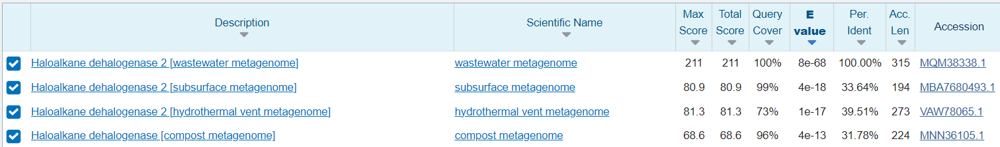
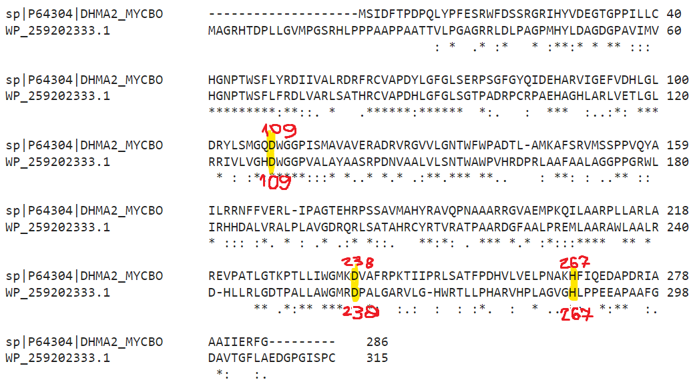
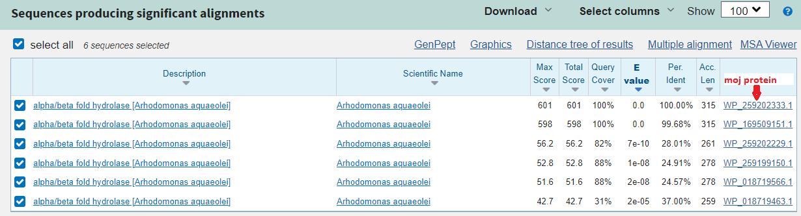
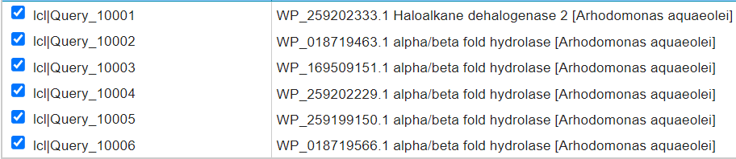
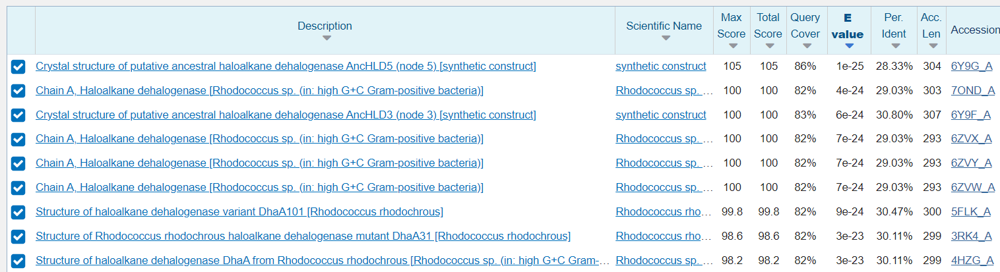
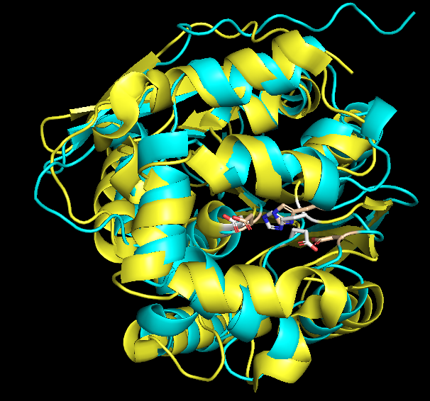
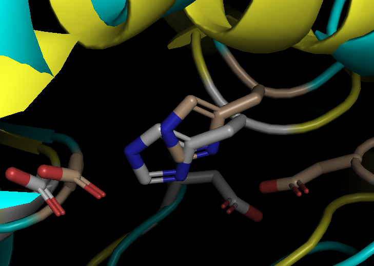

SO4#
Avtor: Luka Fink
Datum izdelave: 2023-05-12
Koda seminarja: S04
Vhodni podatek#
Zaporedje:
LARLVETLGLRRIVLVGHDWGGPVALAYAASRPDNVAALV
LSNTWAWPVHRDPRLAAFAALAGGPPGRWLIRHHDALVRA
LPLAVGDRQRLSATAHRCYRTVRATPAARD
Rezultati analiz#
Identifikacija#
Protein: Haloalkanska dehalogenaza 2
Organizem: Arhodomonas_aquaeolei
To je bakterija iz roda Arhodomonas. Za ta rod je značilno, da živi v okolju z visoko slanostjo. Je aerobna, gram negativna bakterija in je paličaste oblike.
Potencialna funkcija proteina: Katalizira hidrolitično cepitev med ogljikom in halogenom v halogeniranih alifatskih molekulah. Pri tem nastane primarni alkohol, halogenidni ion in protoni. Spada v družino alfa/beta zvitih hidrolaz. Na UniProtu sem našel, da obstajajo 3 tipi, tj. tip 1, 2 in 3. Nisem našel kaj je glavna razlika med njimi, ugotovil sem le, da se ne razlikujejo po tem, katero katalitsko triado imajo. Npr. aktivno mesto z ak ostanki DDH ali DEH je lahko prisotno tako v tipu 1 kot 2.
Identifikacija je bila narejena z BLASTp in sicer z iskanjem po Non-redundant protein sequences (oz. nr) in po Metagenomic proteins (oz. env_nr) bazi podatkov.
Z iskanjem po nr bazi je zadetek sledeči:

Prvi zadetek nas torej pripelje do proteina alpha/beta fold hydrolase. To je encim z imenom hidrolaza, ki katalizira biokemijsko reakcijo, pri čemer uporabi vodo za razcep kemijske vezi. Celoten protein ima sledeče aminokislinsko zaporedje, ki je dolgo 315 ak:
MAGRHTDPLLGVMPGSRHLPPPAAPPAATTVLPGAGRRLDLPAGPMHYLDAGDGPAVIMVHGNPTWSFLF
RDLVARLSATHRCVAPDHLGFGLSGTPADRPCRPAEHAGHLARLVETLGLRRIVLVGHDWGGPVALAYAA
SRPDNVAALVLSNTWAWPVHRDPRLAAFAALAGGPPGRWLIRHHDALVRALPLAVGDRQRLSATAHRCYR
TVRATPAARDGFAALPREMLAARAWLAALRDHLLRLGDTPALLAWGMRDPALGARVLGHWRTLLPHARVH
PLAGVGHLPPEEAPAAFGDAVTGFLAEDGPGISPC
Povezava_do_GenBank kjer je zapisano celotno aminokislinsko zaporedje.
V nadaljni analizi sem ugotovil, da to zaporedje vsebuje signalni peptid. To sem ugotovil šele, ko sem naredil poravnavo v Clustal Omega (glej spodaj) in ugotovil, da je dolg 20 ak (glede na poravnan anotiran protein). Brez signalnega peptida izgleda ak zaporedje takole:
PPAAPPAATTVLPGAGRRLDLPAGPMHYLDAGDGPAVIMVHGNPTWSFLFRDLVARLSATHRCVAPDHL
GFGLSGTPADRPCRPAEHAGHLARLVETLGLRRIVLVGHDWGGPVALAYAASRPDNVAALVLSNTWAW
PVHRDPRLAAFAALAGGPPGRWLIRHHDALVRALPLAVGDRQRLSATAHRCYRTVRATPAARDGFAAL
PREMLAARAWLAALRDHLLRLGDTPALLAWGMRDPALGARVLGHWRTLLPHARVHPLAGVGHLPPEE
APAAFGDAVTGFLAEDGPGISPC
Ko sem nadaljeval z iskanjem, in sicer po env_nr bazi podatkov, pa je rezultat iskanja isto aminokislinsko zaporedje, ampak ima protein drugo ime. To je haloalkanska dehalogenaza 2. To je tudi moj iskani protein.

Splošna karakterizacija#
Kje v izvornem organizmu/celici se protein nahaja? Pri anotirani in podobni haloalkanski dehaloganazi 2 tj. P9WMS1 piše, da se nahaja na zunanji strani plazemske membrane.
Katere post-translacijske modifikacije ima? Odstrani se samo omenjen signalni peptid dolžine 20 ak. Drugih modifikacij nisem našel in to trdim zato, ker jih tudi anotirane haloalkanske dehalogenaze 2 nimajo.
Če želimo pripraviti protein v rekombinantni obliki, kateri gostiteljski organizem je najbolj smiselno izbrati in kateri del proteina bi izražali? Protein bi rekombinantno izrazil v bakteriji Escherichia coli. Izražali bi lahko celoten protein.
So znani kakšni homologi (ortologi, paralogi)? Kaj je znanega o njih (funkcija, modifikacije, regulacija, aktivno mesto, …)? Z iskanjem s celotnim aminokislinskim zaporedjem mojega proteina z BLASTp po bazi anotiranih proteinov tj. UniProtKB/Swiss-Prot(swissprot) dobim zadetek z 38 % identičnostjo. To je tudi ortolog, saj ima isto funkcijo in se nahaja v drugem organizmu (Mycobacterium bovis).
 UniProt id: P64304
UniProt id: P64304
Ta zadetek je seveda anotiran, zato lahko iz njega poberem veliko uporabnih podatkov. Njegovo aktivno mesto vsebuje katalitsko triado D,D in H, na mestih 109, 238 in 267. Glede na te podatke sem naredil poravnavo, da bi poiskal aktivno mesto mojega encima.
Naredil sem poravnavo s to anotirano haloalkansko dehalogenaoz 2, s spletnim orodjem Clustal Omega in dobil sledeče rezultate: 
Kot lahko razberemo iz slike, je aktivno mesto ohranjeno. Naš protein ima na enakem mestu aktivno mesto in sicer D, D in H, na mestih 109, 238 in 267. (Tukaj sem videl, da je bilo treba odstraniti signalni peptid.)
Za iskanje paralogov sem uporabil BLASTp in pri tem uporabil filter, ki išče podobne proteine samo v mojem organizmu, in iskal po bazi podatkov nr. Dobil sem sledeče:

Od tukaj naprej sem naredil sledeče. Vzel sem ak zaporedje vseh teh proteinov in jih poravnav v COBALT-u. ‘query10001’ je moj protein, tam sem označil aktivno mesto in potegnil navzdol črto in preveril ohranjenost aktivnega mesta v teh proteinih. Aktivno mesto je ohranjeno samo pri WP_169509151. Ostali poravnani proteini pa imajo v aktivnem S, D, H. Torej od kje ta S?


Če uporabim BLASTp in iščem po UniProt anotiranih proteinih s proteinom WP_018719463.1, dobim zadetek P19076. To je še ena hidrolaza (bolj specifično gre za: 2-hydroxymuconate semialdehyde hydrolase). Ta hidrolaza ima v aktivnem mestu omenjeno katalitsko triado S, D in H. Torej vsi proteini v poravnavi, ki imajo aktivno mesto SDH, so paralogi, saj to drugačno aktivno mesto nakazuje drugačno aktivnost in hkrati so proteini v istem organizmu. (V to analizo nisem čisto prepričan, da je pravilna, saj ne vem točno, če mi COBALT poravna tako, da čim bolj ohrani aktivno mesto.)
Predstavlja naš protein encim ali gre za kak drug protein? Prosim glej odgovore zgoraj.
Kaj so najbolj ohranjene regije v skupini, ki jo predstavlja ta protein in njegovi homologi? Na sliki spodaj je narejena poravnava med anotiranim proteinom in mojim. Pri anotiranem piše, da vsebuje AB hydrolase-1 domeno. S poravnavo z Needle sem preveril, če je mogoče ta domena tudi v mojem proteinu. V grobem bi lahko rekel, da je označen del poravnave relativno zelo ohranjen in bi lahko kazal na enako podobno domeno.

So v zaporedju kakšne ponavljajoče se regije oz. motivi? Niso.
S katerimi proteini ali drugimi molekulami bi lahko ta protein potencialno interagiral? Nisem našel nič. Na UniProt podobnih anotiranih proteinih nisem našel nič o interakcijah. Moje znanje o interakcijah se zaenkrat konča tukaj. Lahko bi uporabil kakšno nevronsko mrežo interakcij, ki smo jih omenjali na predavanju (npr. STRING).
Strukturna katakterizacija#
Je znana struktura tega proteina ali njegovega dela? Ne, iskanje s celotnim aminokislinskim zaporedjem z BLASTp po PDB bazi nam ne da nobenih zadetkov za moj protein. 
Je znana struktura homologov? Katerih?

Da, znana je struktura veliko haloalkanskih dehalogenaz, za katere lahko trdimo, da so homologi.
Pripravite model proteina oz. njegovega dela, ki bi predstavljal funkcionalen topen protein.

Slika prikazuje model mojega proteina narejenega s SWISS-MODEL. Označeno je tudi aktivno mesto DDH. (Narejeno s PyMol.)
Primerjajte model oz. eksperimentalno strukturo z eksperimentalno strukturo homologa, osredotočite se na funkcijsko pomembne regije.
V PyMol sem pripravil poravnavo modela, ki ga je naredil SWISS-MODEL in njegovim homologom 5flk (njegov UniProt ID P0A3G2), ki je tudi haloalkanska dehalogenaza. Prva razlika, ki jo lahko opazimo je, da je moj tipa 2, tisti na pdb pa tipa 1. Druga razlika je, da je aktivno mesto homologa DEH, mojega pa DDH. To je v bistu zelo majhna razlika, saj gre le za majhno spremembo, saj sta si ak E in D zelo podobni in to po vsej verjetnosti ne moti katalize. To ohranjenost lahko vidimo tudi na slikah spodaj.


Legenda:
rumena - 5flk
sivi ak ostanki - aktivno mesto 5flk
svetlo modra - swiss_model
pšenična barva - aktivno mesto swiss_model
In še model narejen z alfafold.


Legenda:
vijolična - 5flk
sivi ak ostanki - aktivno mesto 5flk
zelena - alfafold
pšenična barva - aktivno mesto alfafold